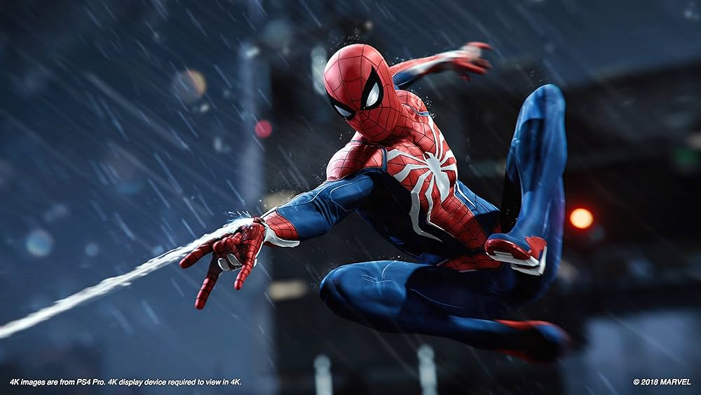
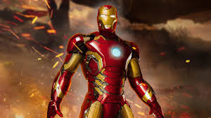
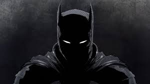
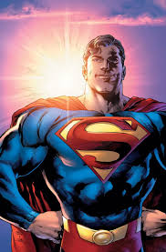
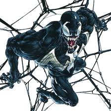

tabla de personajes
| NOMBRE |
personajes |
descripcion |
| Spider-Man |
 |
Es Peter Parker, un joven normal y brillante que adquiere poderes de araña después de ser mordido por una araña radiactiva.
Sus poderes incluyen fuerza, agilidad y resistencia sobrehumanas, la habilidad de adherirse a las paredes y un "sentido arácnido" que lo alerta del peligro. |
| Iron Man |
 |
Iron Man es la identidad secreta de Tony Stark, un genio multimillonario, ingeniero y playboy que, tras ser secuestrado y sufrir una grave lesión cardíaca,
creó una armadura de alta tecnología para salvar su vida y luchar contra el mal. |
| Batman |
 |
Batman es la identidad secreta de Bruce Wayne, un multimillonario filántropo y hombre de negocios que combate el crimen en Ciudad Gótica
utilizando su vasto intelecto, habilidades de combate, tecnología avanzada y una fortuna personal para crear el personaje del Batman,
un símbolo que infunde miedo en los criminales. |
| Superman |
 |
Superman, nacido Kal-El en Krypton y criado como Clark Kent en la Tierra, es un superhéroe humanoide alienígena con superfuerza,
velocidad, invulnerabilidad y la capacidad de volar, todo esto impulsado por la energía solar de la Tierra. |
| Venom |
 |
Venom es un personaje de Marvel compuesto por un simbionte alienígena de forma amorfa y líquida que se une a un huésped humano,
otorgándole fuerza, agilidad, y la capacidad de cambiar su forma, aunque el huésped lo bautiza con este nombre. |